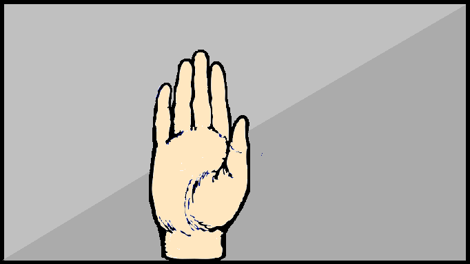
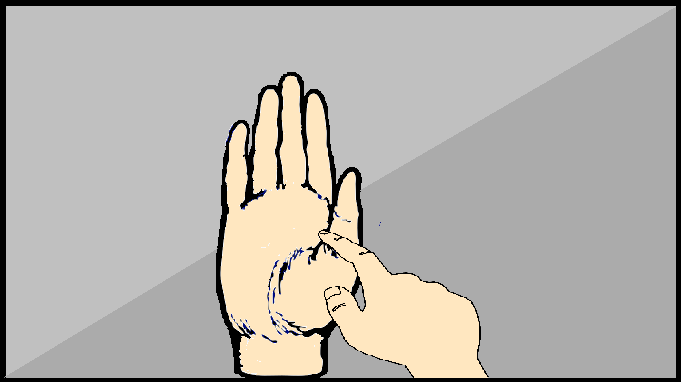

As a Freshman at Michigan State, I found when meeting new people that
us native Michiganders love using our hands to show where we are from. However,
this can get awfully awkward for our out of state students,
as they aren't as aware of the layout of the Michigan cities.
The Michigan Hand Map perfectly solves this problem. Users can easily input
the location of a michigan town based on their hand gestures, and our website will perfectly return a name to that location!
Step 1: Place Hand in the center of frame, only your hand should be in the frame.

Step 2: use other hand to point to the desired Michigan location.

Thats all! Keep Scrolling to access the Hand Mapper!
Hand should be filling the screen in the center, use opposite hand to point
If you need to point across the state, feel free to do so :)
make sure you have a neutral background too :)